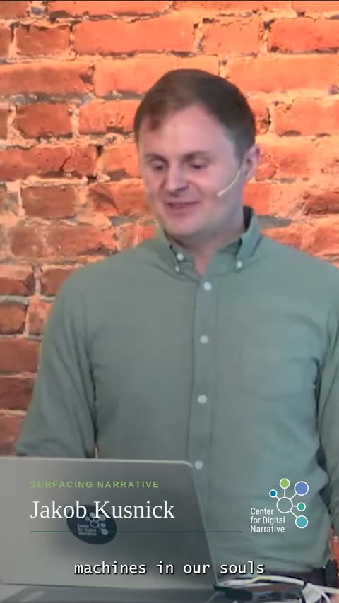
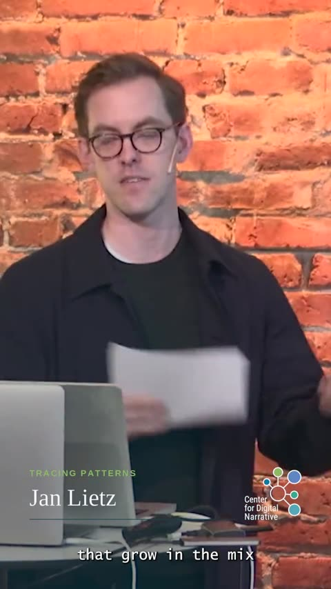
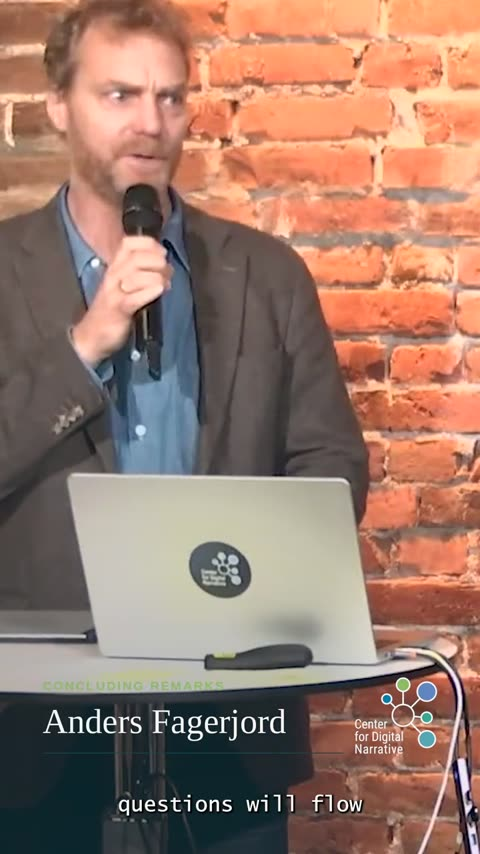
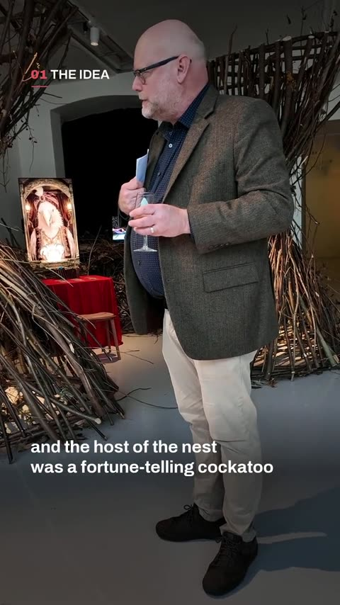
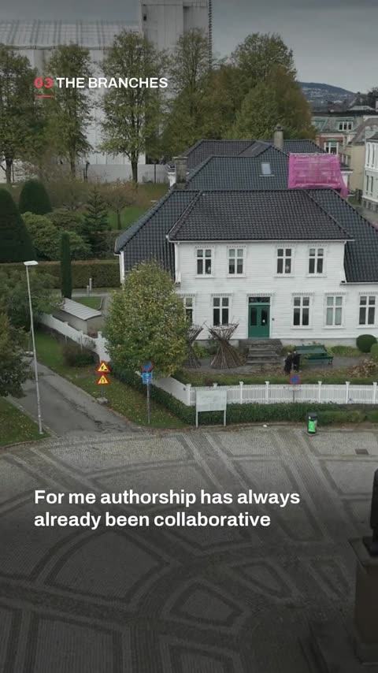
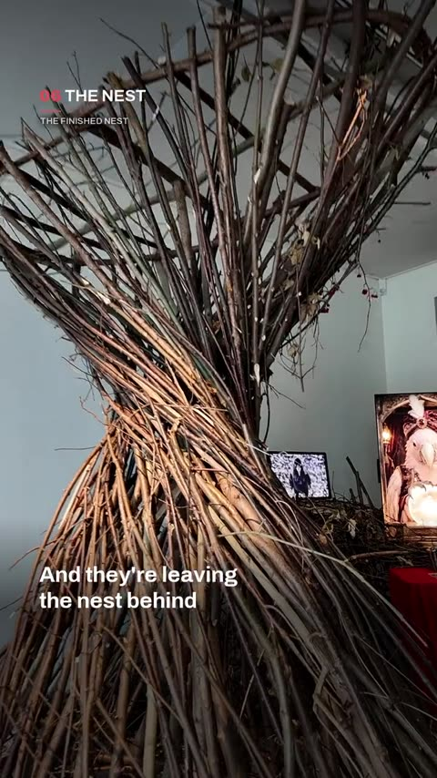

Premiere crashed five or six times in two days. On the timeline sat Scott Rettberg's rap, twenty researchers waiting to be cut onto the beat, and a subtitle track I was building one line at a time.
Scott is the director of the Center for Digital Narrative (CDN) at the University of Bergen. He had already recorded the rap. I took his recording into Suno and made a nineties backing track that suited his voice. Everything after that I did by hand in Premiere. Every cut lands on the beat and every subtitle sits where his words do, so it looks as if he is performing with all twenty researchers.
That was CDN Equinox on 23 September, early in my practice placement. Andreas Hadsel Opsvik, CDN's communications adviser, handed me the Instagram password and a lot of freedom. That autumn I planned, filmed, recorded sound, edited and posted for the center, and did the drone shoots with Alexander. At Equinox I was also on the programme myself, with my talk Me, Myself and A.I. and the panel The Haunting of the Author. I was filming a research day I was speaking at.
It was my second time at the center. In the spring I was there through DIKULT210, so I already knew the people and what they research. That helped more than I expected. Before I cut anything, I learned the names and research fields of all twenty researchers. I needed to know what I was looking at before I could decide what belonged together.
Equinox was fully booked, so the event needed no promotion beforehand. The film became the marketing afterwards.



Three of the twenty. Every subtitle placed by hand on the beat.
I have watched that film more times than anyone. I still see the places where the timing slips. At some point you have to finish anyway.
Later that autumn I was editing with AI, and my messages sounded like this:
"We need peaks. We need super high excitement."
01The humans that know
Scott's rap ends on one line:
"It's not what AI makes. It's the humans that know."
A few weeks later I opened the promo for After Virtual Reality with it. The exhibition, made by CDN with BIFF and USF Verftet, ran in Visningsrommet from 15 to 21 October. I cut that promo by hand as well.
02Microphone on everything
An exhibition that is open for seven days gives a film a very short life. Post the opening film a week late and you have made a historical document.
So I edited fast, a film a day, checking every name and credit against a programme that kept changing. The perfectionist in me hated it. During a festival, being on time matters more than being perfect.
The opening also gave me my rookie mistake. Scott spoke inside the giant nest before I had connected the microphone. We rescued the sound after a couple of hours of prompting, using his own voice from Equinox as the reference. No new words were added. In the lectures they told us to put a microphone on everything. Now I know why.
03One voice at a time
The exhibition films had rules. A hook in the first two seconds, cuts on the beat, and the works speaking in their own voices, one at a time, with the music ducked underneath.
04Cut here
This is where AI came into the editing. I worked in VS Code with an AI assistant. I described the edit, it searched, measured and rendered, and I checked the result and corrected it. People sometimes picture AI editing as a CapCut template. In my case I was the template. I said "cut here", and every decision about what belonged where came from me.
Then I watched another export.
Scott asked for a film about building the nest. He had told me my videos make him look cooler than he is, so the pressure was on. The film went through sixteen versions.



From Building the nest. Every one of these cuts went through words before it went through code.
Across the AI-assisted films, the assistant kept doing more than I had asked for. After it added a purple dream filter and a new opening on its own, I made a rule: plan first, and only do what I say. My words needed translating too. "Slow", "POW" and "immersive" had to become seconds, beats and decibels before anything changed.
05Version eight
After the exhibition closed, I made one more film about the nest. The Grand Hotels is about three works by Roderick Coover, Caitlin Fisher and Scott Rettberg, and the nest built by Felix Costain Schou. The voices are Scott, Rod, Caitlin and the cockatoo, sixteen lines, every one a whole sentence.
It went through eight named versions over four days, and a new version is not a button. Claude Code never opens Premiere. A version of The Grand Hotels is a list in a text file: clip 0112 from 31 seconds, for 0.66 seconds, then clip 0271 from 763.7 seconds, for 1.28, and on through the whole film. Code renders that list into video. These are the first three cuts of the posted version, shortened a little from the file:
{ "src": "0112", "in": 31.0, "dur": 0.66, "kind": "v" },
{ "src": "0271", "in": 763.7, "dur": 1.28, "kind": "v" },
{ "src": "0878", "in": 40.0, "dur": 0.5, "kind": "land" },
To move one cut, I described it in words, waited for a new render, watched it and described what was still wrong.
The hardest part was the beat. Claude Code cannot listen. It can measure loudness, calculate that the beat falls every 0.975 seconds, transcribe hours of recordings and find the sentence I am looking for. It cannot hear whether a cut lands. So I was the ears. I listened to every render and wrote back what was wrong. It turned my words into new numbers, and I watched again. The hum under Rod's voice was something I heard. Its own checks never caught it.
This is what directing it looked like. A few of my messages from those four days, typos fixed:
"This is not good at all. What's happening with the sound? What's happening with the beginning?"
"No voices in the audio should ever clash."
"We don't need the shot where the postcard is, the red postcard. That's ugly."
"We made so many versions that I'm a little bit like, ugh."
"Hold on Caitlin's blessing for one second, for an artistic moment, and then fast-paced again."
"Subtitles are still a bit slow. After Caitlin, in the nest."
"The subtitles are wrong when Scott says they are no birds. They're all birds. That's actually the last fix."
Afterwards I made a short film of the process itself, version by version, with what I said about each one.
The eight versions took one conversation, from 8 to 11 November: more than 170 messages from me and around 50 renders. AI assistance did not make this film quick. Getting the result I wanted took a lot of time.
The eighth version is the one I posted, on a Wednesday at nine in the evening, when the followers were awake.
It became my most watched AI-assisted film this autumn. I am really proud of it.
06So who made it?
The finished films show none of the rejected versions or the instructions I rewrote. That history is part of the answer to who made them.
In the Equinox film, the recording is Scott's and the backing track came from Suno. The cut, the subtitles and the choice of material are mine. In the AI-assisted films, the machine searched hours of footage and rendered on request. The story, the rhythm and the judgement of what was good enough came from me, and so did every decision to publish.
Something else surprised me. I see fewer mistakes in the AI-assisted films, but I have also watched them fewer times, and I did not cut every millimetre myself. That is my own impression. I have not measured it. The films end up roughly as good. The feeling afterwards is different. Building something from the ground up, mistakes and all, is more rewarding. With two days to sit with a project, I would rather do it myself. During a festival I never had two days.
07A template of my own
A lot of my editing hours went into finding the right clip, matching subtitles to voices and exporting again. So I want to build a tool of my own from the code and methods of this autumn. It would run on my own machine, I would talk to it, and it would give me a first cut as an editable timeline I can open and change myself. The choices and the decision to publish stay with me.
08Credits roll
Thank you to Andreas Hadsel Opsvik for supervising me and trusting me to work on my own. Thank you to Scott Rettberg for the rap, the nest and for letting me keep filming. Thank you to Alexander for flying the drone with me, to the artists in After Virtual Reality for sharing their material, and to the twenty Equinox researchers, who came to a research day and left as backup dancers in their director's music video. They found out when it was posted, with Andreas's blessing. Sorry, and you're welcome.
If you want to edit like this, take the rule I learned the hard way: plan first, and let the AI do only what you say. Then keep every version. They show what you actually did.